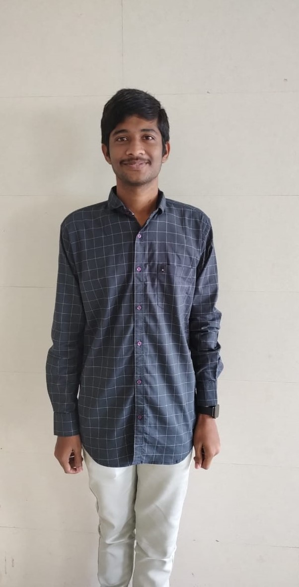

HELLO!I would like to welcome you all.
I am P.Gunadeesh Reddy studying in II nd year saveetha school of engineering at chennai.
HII,I am a normal student who was very naughty and very lazy at my childhood at my native place kothur at chittoor district in andhra pradesh,india.Later,I was moved to tirupati for my higher studies then i came to know about the importance of studies.From then to now of II nd year B TECH till it is continuing to study hard.But i feel studying is the difficult until if you understand the concept.
Now,let me ask,how many of you felt ?? that studying is most difficult job than the other.YAH!!I too felt that ,but i realised it's the best job than the other.so,please study.
I would like to share my experience of attending the theatre for the first time in chennai with my friends at EVP theatre of the telugu movie called VIRUPAKSHA which was a horror zoner and thriller with mindblowing twists while watching.The main reason for watching the film is as i was a person who are unable to watch the movies in theatre,but the trailer of movie was so interseting which made to watch the movie as soon as possible.
I also say that the enjoyment which was made in the btech life was most memorable,so,please make the possible best moments in the life.
OF COURSE!!,The major part among the life are friends ,as i am not much comfort as i am introvert ,i have only few friends around school,collge.the main reason for attending the movie is also my friends where i am able to watch the movies with comfort .
Especially, I would like to listen music at evening for a quicknap which refresh me a lot.
There are no such acheivements still,as i would to share the grades of my studies
| SUBJECT | GRADE |
| PRINCIPLES OF DIGITAL SYATEM DESIGN | A |
| ARTIFICIAL INTELLIGENCE | A |
| DATA STRUCTURES | A |
| MICROPROCESSOR AND MICROCONTORLLER | A |
oops!!,As i was very confident i that above subjects where i will get the S grage ,but unfortunately i got A grades in all the subjects,as i would like add that the sem of II nd II nd sem was very quite interesting with helped me to gain knowledge among all four subjects .the first sem i studied the all concepts of every subject as i following to learn only the important concepts .we had a better lesson for me,But i was quite happy that i cleared my arrear which was the first time i would taste the smell of the failed person feeling.as i move to tirupati for higher studies,everytime i would get class first in all subjects,which had been the good one in my life.i special thank for the people who are responsible for all.next ,for the first time i failed in the last sem of first year which i would not believe.later ,i cleared the subject with the good marks.i would like to say its a programming language.so,please do well in programming languages.
As i would like to add that i have the project for artificial intelligence with the team of three members.
The project is about SMART DUSTBIN which was looking easy project,but not.we faced the lot of challenges while doing the project.At last ,the project final demo has arrived ,but the project was not yet completed ,as we have a professor at lab who helped at the last moment to complete the project and it was very successfull project which we are among the highest rating projects.so,i specially thank my faculty and professor and my team.
SMART DUSTBIN PROJECTI would like to share my enjoyment in the day as i play lot of mobile games such as township,free fire etc...lot more games.I like township very much as it was the main for me during the corona pandemic,where the game to built the town in a creative and a beautiful manner,last due to some issuses it was not supporting my mobile.last a year i would to install and play the game in new mobile since first.then a game called freefire was introduced which was quite interesting but used to play for timepass.
as i would like to play badmiton as outdoor game,which was quite intersting.
AS,I was very zeal to learn any thing,so i came to know about web development which was quite good to hear,then i started learn it the first one is html which was easy at first stage,as i written this web page which you are reading is in HTMLlanguage.
At,last coming to my family details ,as my most favorite person in my family is my grandma ,as she take care of me as her child,since childhood, she was the person to encourage,and understand me than my parents,as my parents also took care of me.
As,this is the last sem of second year ,i would like to hear the good commpliments from my faculties.